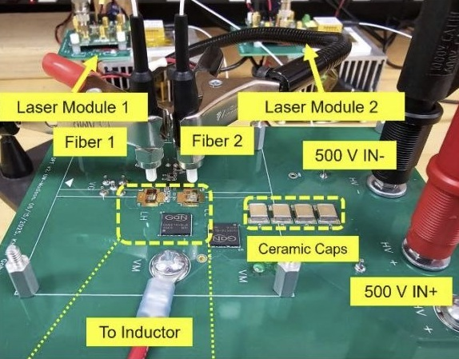
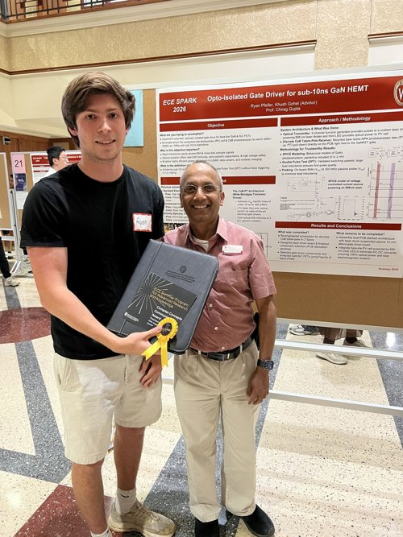

Optically Isolated GaN Gate Drive
Undergraduate Researcher, Wide-Bandgap Materials and Devices Lab
Designed a sub-10ns optically isolated gate drive for GaN HEMTs, modeling phototransistor switching in LTSpice and laying out chip-on-board PCBs in Altium to minimize parasitic inductance.
Presented this work at the 2026 SPARK poster symposium and received the Complex Concepts Communicator Award for clarity in explaining the research to peers and faculty.

View Poster →